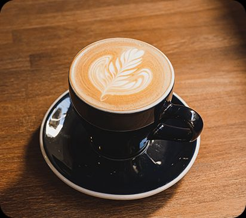

Macchiato Coffee
Macchiato is an Italian espresso-based drink consisting of a shot of espresso "stained" or "marked" with a small amount of foamed or steamed milk.
Ph 375Espresso Coffee

Espresso is a concentrated coffee beverage made by forcing hot, high-pressure water through finely-ground, compacted coffee beans.
Ph 350Curto Coffee

Curto is a Portuguese term for a short espresso, or one with a small amount of water, resulting in a concentrated, stronger flavor compared to a standard espresso.
Ph 400Carioca Coffee

A carioca can refer to a brand of coffee beans, typically Brazilian-grown Arabica, with a smooth, rich, and creamy profile, often featuring notes of vanilla, hazelnut, or chocolate.
Ph 280Doppio Coffee

Doppio is an Italian term for a double shot of espresso, made with twice the amount of coffee grounds and a larger volume of water than a single shot, resulting in a stronger, richer flavor and higher caffeine content.
Ph 699Especiarias Coffee

Especiarias Coffee refer to coffee beans with complex, spice-like flavors or a blend containing spices, common in specialty coffee with notes of chocolate, cinnamon, or pepper, particularly in dark roasts from Central and South America.
Ph 550Café Filtrado Coffee

Café Filtrado refers to drip-brew coffee, a method where hot water passes through ground coffee held in a filter, resulting in a smooth, robust flavor that highlights the bean's original notes.
Ph 475Prensa Francesa Coffee

French press coffee is a full-bodied, robust brew made by immersing coarse coffee grounds in hot water and then using a plunger with a mesh filter to separate the grounds from the liquid.
Ph 499Irish coffee

A Irish coffee is a hot, boozy beverage composed of freshly brewed coffee, Irish whiskey, and sugar, all topped with a distinct layer of lightly whipped cream.
Ph 599latte Macchiato Mocha Coffee

A latte macchiato mocha is an American-style, layered chocolate espresso drink made by pouring espresso over steamed milk and chocolate syrup, then topping with a layer of milk foam.
Ph 799Cappuccino Cream Coffee

Cappuccino Crema is an espresso-based coffee drink traditionally prepared with steamed milk, including a layer of milk foam.
Ph 775Cappuccino Fit Coffee

Pretty Easy Nutri Cafe Fit Cappuccino fiber coffee with digestive enzymes can enhance energy, boost focus, improve healing abilities and lose weight.
Ph 899